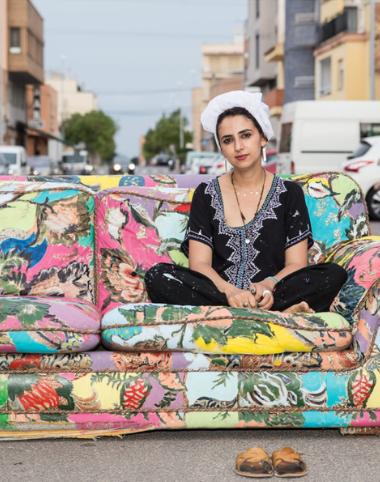

Portfolio artístico
Naoual Ameur Fahid
Arte, creatividad y expresión visual a través de una obra marcada por la identidad cultural, el color y la exploración de lenguajes contemporáneos.

Identidad
Color
Memoria visual
Sobre la artista
Una mirada creativa entre tradición y contemporaneidad
Naoual Ameur Fahid desarrolla una propuesta artística basada en la creatividad, la identidad cultural y la exploración visual mediante diferentes técnicas y lenguajes contemporáneos. Su trabajo busca transmitir sensaciones, diálogo y una forma personal de mirar el mundo.
Selección
Obras destacadas

Batalla de emociones
Pintura sobre muro

Líneas rojas
Instalación textil

Memoria de fuego
Intervención visual
Lenguaje visual
Un proceso centrado en emoción, forma y cultura
Observación
La obra nace del contacto con la cultura, las personas y las emociones cotidianas.
Experimentación
El color, las texturas y las formas se combinan para construir un lenguaje propio.
Expresión
Cada pieza abre un espacio de encuentro entre identidad, memoria y mirada contemporánea.
“El arte permite expresar aquello que las palabras no alcanzan.”Contactar